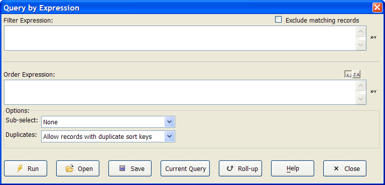

Query by Expression
The Query by Expression dialog box is available when viewing both forms and browses, and lets you filter and sort records by directly entering filter and order expressions. Query by Expression is primarily intended for experienced users who are more comfortable writing expressions than using Genies.

The Query by Expression dialog box is modeless, meaning you can leave it open while you continue to work with your form or browse. You can also specify sub-selection criteria for your queries.
To use Query by Expression :
Select Query > Query by Expression or click
 on the form
or browse toolbar.
on the form
or browse toolbar.Optionally, click
 to display a list of saved queries.
to display a list of saved queries.Optionally, click Current Query to load the current filter and order expressions for the layout.
Optionally, enter a Filter Expression. The filter expression determines the records to display. Click
 to open
the <span class=Screen>Expression Builder</span>.
to open
the <span class=Screen>Expression Builder</span>.Optionally, check the Exclude matching records check box if you want to invert your filter expression.
Optionally, enter an Order Expression. The order expression determines the order in which to display the filtered records. Click
to open the <span class=Screen>Expression Builder</span>.Optionally, limit the records you retrieve by using a function in the <span class=Control>Sub-select Options</span> list.
Optionally, make a selection from the Duplicates list. The options are:
"Allow records with duplicate sort keys"
"Exclude records with duplicate sort keys"
Click
 to execute the current query.
to execute the current query.Optionally, click
 to save the query for future use.
to save the query for future use.Click
 to exit.
to exit.
See Also
Query Genie, Query Builder, Query by Form, Query Operations, Quickly Sorting/Filtering Records, Query Functions and Methods
Supported By
Alpha Five Version 5 and Above